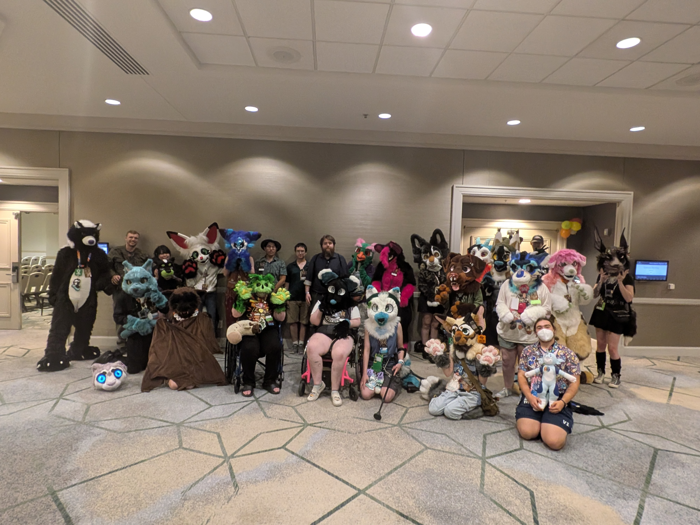
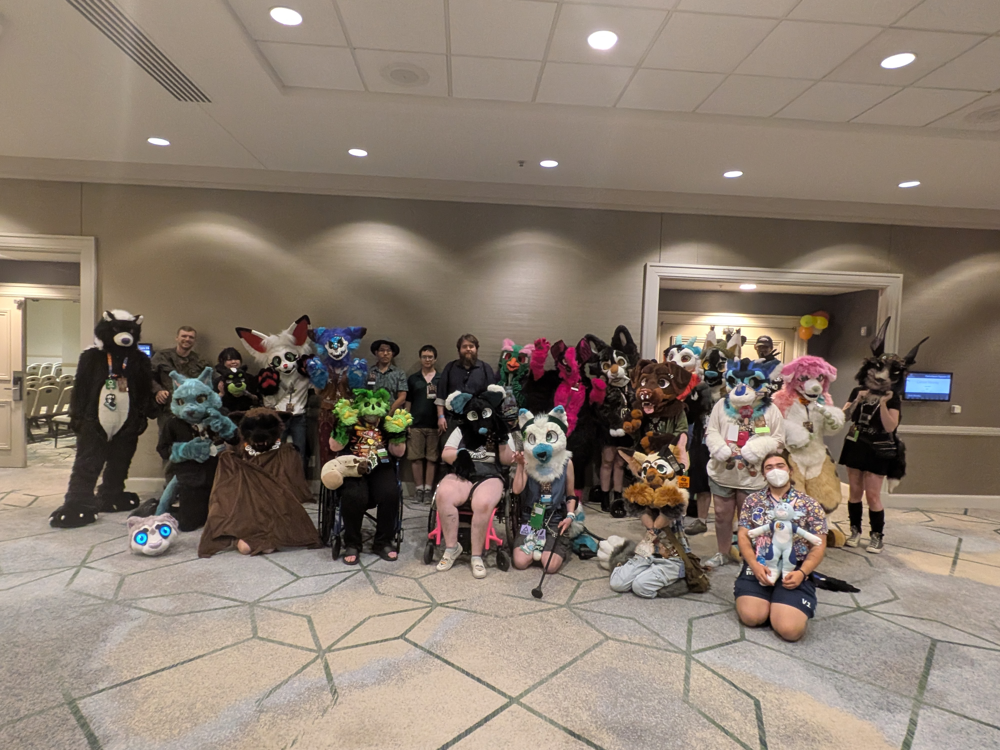
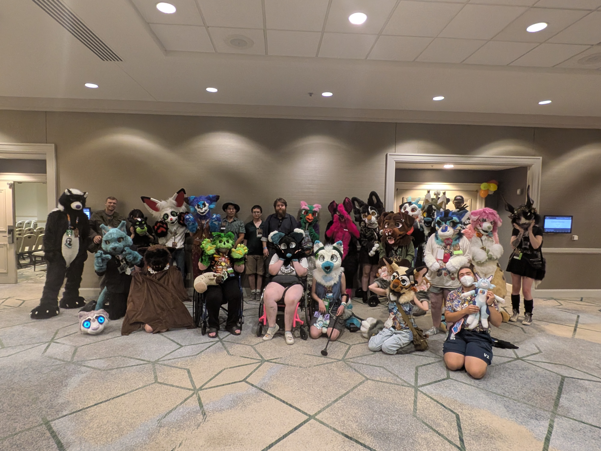
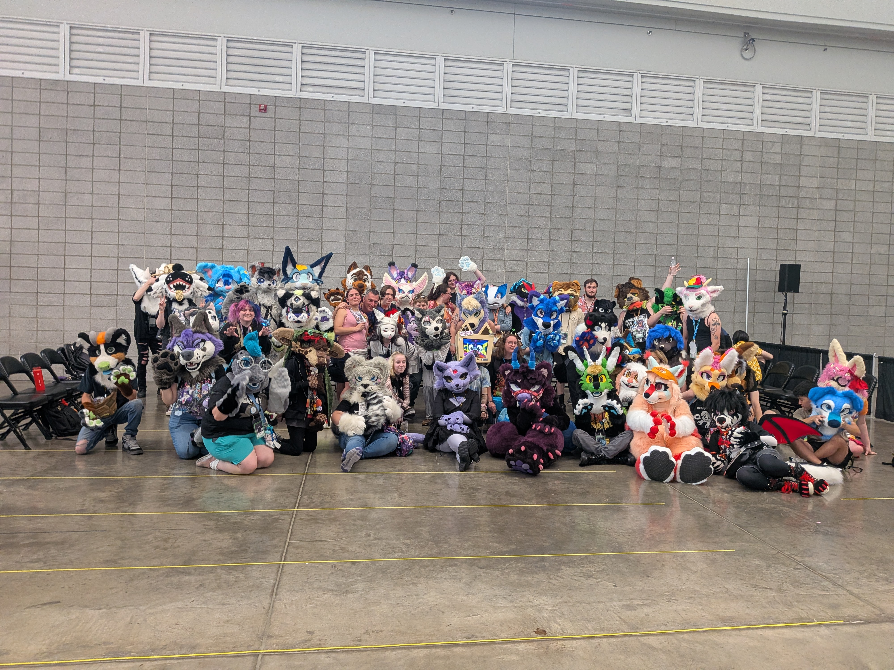
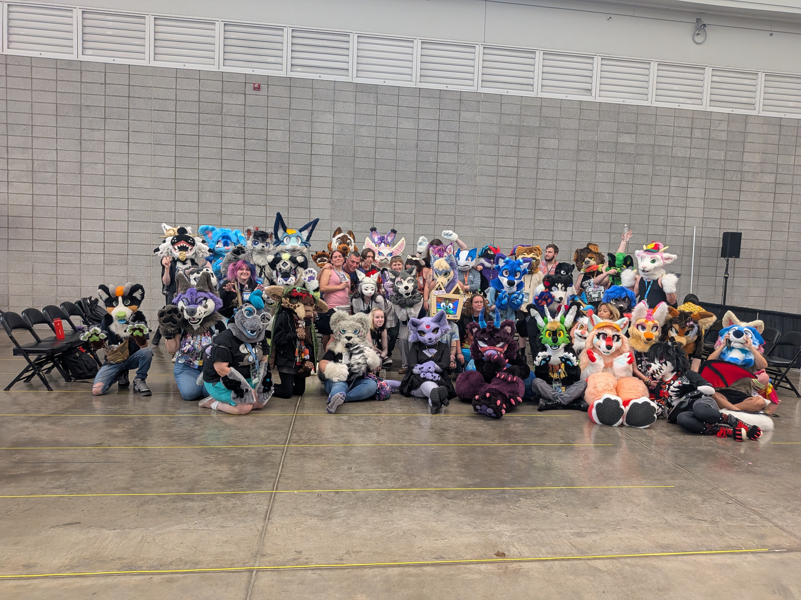
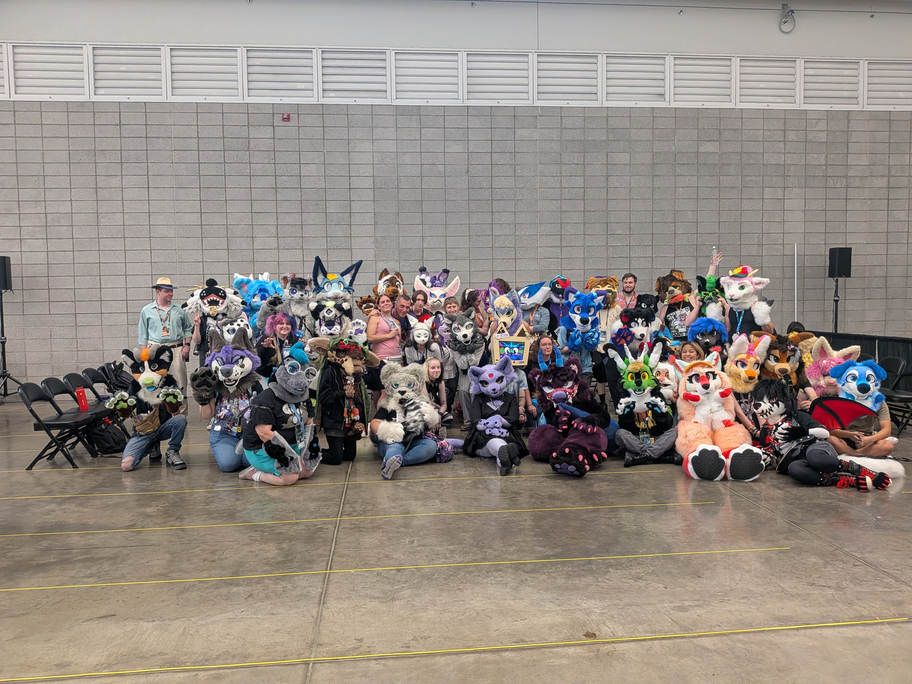

Thursday, December 3rd. 8:30-9:30 PM, Convention Center 5+6. Link to panel on schedule
Do you make fursuits? Whether you've been looking at getting started, make suits for yourself, or make fursuits professionally, come meet up with other fursuit makers! This is a meet and greet style panel for networking and making friends with other fursuit makers. There will also be a group photo!
This is a meetup panel intended as a place for fursuit makers to interact with each other. Anyone is welcome whether you're looking into the craft or you take commissions professionally. This is an all ages meet.
About two-thirds of the way into the panel there will be an opt in group photo. You're welcome to join in or out of suits, and photos will be put on this website afterwards.
There will be a table up front where attendees can place and take business cards, fliers and stickers. There will also be wristbands available so you can show your level of experience and type of work.






no pics 😅
This project is run by inevitablegoose. I intend to host fursuit maker meetups at all the furry conventions I go to. In the future there will also be resources for makers hosted on this site. If you would like to help out PLEASE CONTACT ME!!! telegram and discord (@inevitablegoose) are the fastest way to reach me.